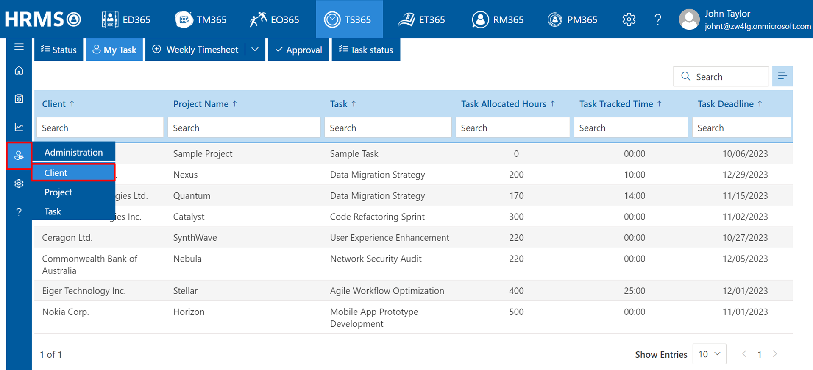
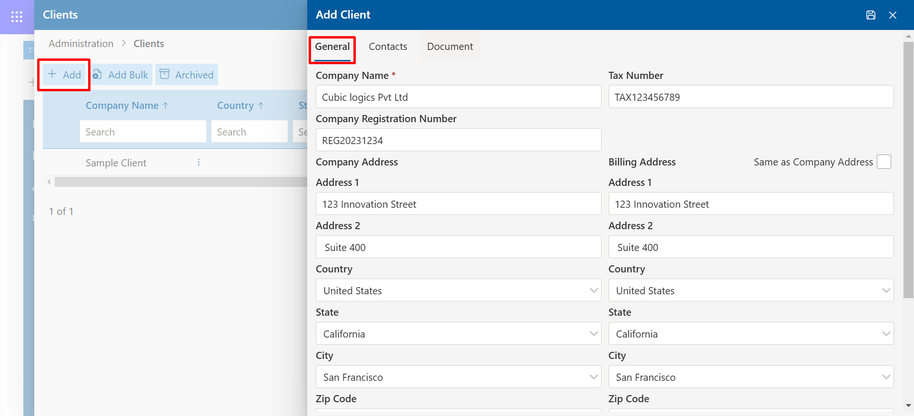
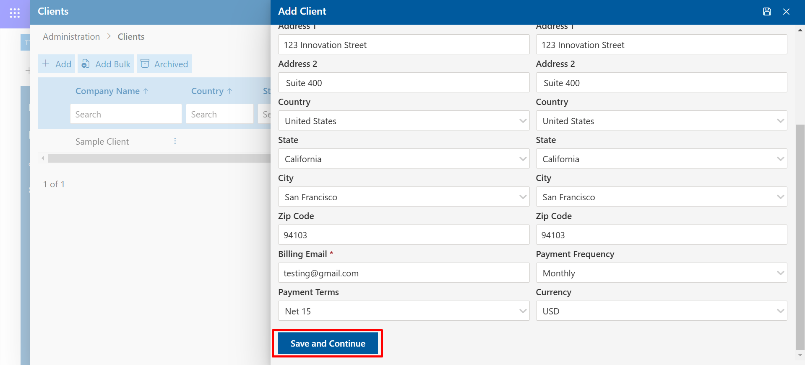
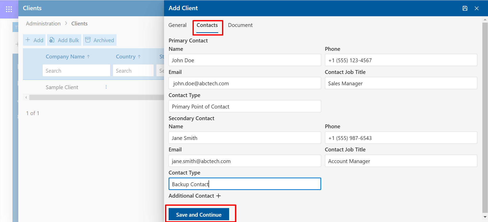
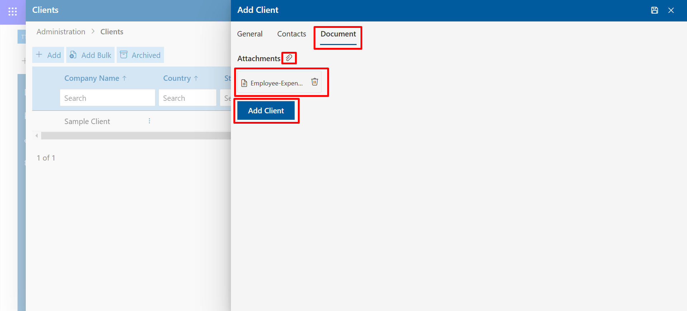
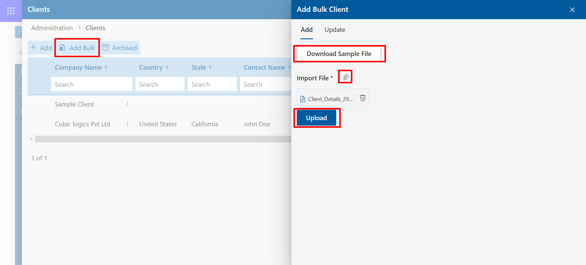
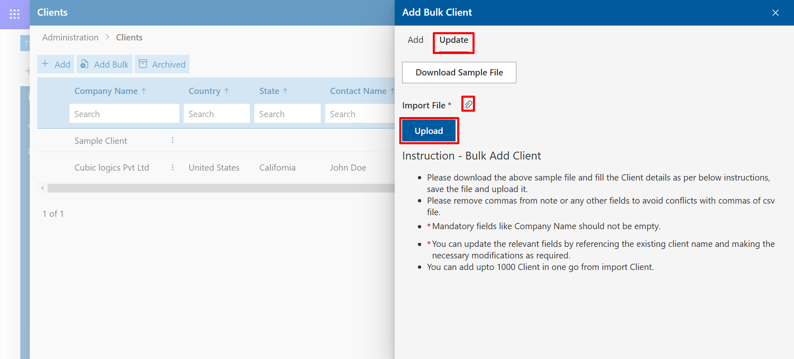
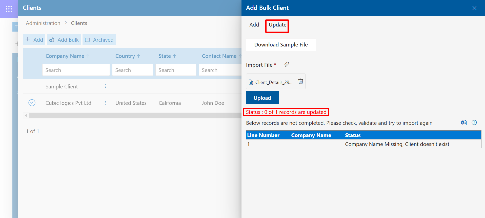

Administration
Under the administration, there are three or four options namely clients, projects, tasks, and activities (optional).
Clients
-
Admin can add client’s information over here. You can add the information through the add button. Use the Add Bulk option to add multiple clients’ information through the download sample file.

You can edit, delete and disable the client information through the edit icon, delete icon, and achieve icon respectively located on the right side in the action column.
To delete multiple items, select your desired item and click on the bulk delete tab.

In the Client section, you first need to click on the Add Client button. After that, you need to fill in the General Details, as shown below.

After filling in the details, you will need to click on the Save and Continue button.

After that, you will need to fill in the details in the fields under the Contact section and then click on the Save and Continue button.

Finally, there is a Document section where you have the option to add attachments and download them. You can also view the name of the attached file. After completing everything, you can click on the Add Client button, and your client will be displayed.

After clicking the Add Bulk button, a panel will open where you will find options to add bulk attachments, upload files, and download files. Instruction: You must follow the Bulk Add Client instructions; otherwise, you won't be able to fill in the data.

When updating a client’s data, you must ensure that the name, email, and some other details remain the same. The Instruction rules must be followed during the update process.

If you don't have the same data, you won't be able to update, and an error will be displayed:
Status: 0 of 1 records are updated.
Message: "Below records are not completed, Please check, validate, and try to import again." The issue will be mentioned under the Status section.
To delete multiple items, select your desired item and click on the bulk delete tab.
Projects
Admin can add or create projects and add team members over here. Can add a project through the add button. Use the Bulk project option to add multiple project information through the download sample file.
You can edit, delete and disable the client information through the edit icon, delete icon, and achieve icon respectively located on the right side in the action column.
In order to delete the multiple items. Select your desired items and click on the bulk delete tab.

In the Project section, you will see the Add Project option. Click on it, and as the data fields are displayed, fill them in accordingly.
First, you will need to fill in the data in the General section, such as Client Name, Project Name, Project Start Date, and End Date. You can also provide attachments if needed.
In the Project People section, you will need to fill in details such as Project Manager, Project Observers, Approvers, and Project Team Members. To add members, click on the Add Member button.
In the Task section, you can add tasks as needed.
In the Project Bulk section, you will find the option to Bulk Add projects. You can add projects by following the Instruction rules provided.
You also have the option to Update Bulk Data. By following the Instruction rules, you can update the data. Additionally, you can download the data as well.
If you don't have the same data, you won't be able to update, and an error
will be displayed:
Status: 0 of 1 records are updated.
Message: "Below records are not completed, Please check, validate,
and try to import again."
The issue will be mentioned under the Status section.
Project Deletion Restriction
Projects that are already associated with submitted timesheets cannot be deleted. This restriction ensures the integrity of historical timesheet data and prevents loss of critical project records.
However, administrators can disable such projects to prevent further use while retaining historical data.
Tasks
Over here, the admin, program manager, and project manager can add tasks for the projects and assign them to the users. Use Add button to add a single task and use Add Bulk button to add multiple tasks. Can add global tasks through the global tasks button.
Global tasks are available to all the users and can use to track the hours in the weekly timesheet.
In case the task is closed, such tasks are not available to track the time in the weekly timesheet. To reopen the task, select the task and click on Reopen button.

In the Task section, you will see an Add Task option. Click on it and fill in the details as prompted step by step.
Then, you can click on the Save and More button to save the task.
In the Task Bulk section, you will find the option to Bulk Add tasks. Follow the Instruction rules to add tasks successfully.
You also have the option to Update Bulk Data. By following the Instruction rules, you can update the data. Additionally, you can download the data as well.
If you don't have the same data, you won't be able to update, and an error
will be displayed:
Status: 0 of 1 records are updated.
Message: "Below records are not completed, Please check, validate,
and try to import again."
The issue will be mentioned under the Status section.
In the Task section, there is another subsection called Global Task, where you can add any global tasks.
You can also add global tasks in bulk using the Add Bulk Task option. However, you need to follow the instruction rules. There is a Download button provided, allowing you to download the file.
A new option, Billable, has been added to the Global Task Table.

Activities
We can view all activities except for task-specific activities and project-specific activities.
Global Activity Add: This allows users to add individual global activities that are applicable across multiple projects or departments. It helps in creating and managing activities that are not limited to a specific task or project.
Global Activity Bulk Add: This feature enables the bulk addition of multiple global activities at once, streamlining the process when dealing with a large number of global activities that need to be applied across various projects or tasks.
We can view all activities except for global activities and task-specific activities.
Project Activities Add: This function lets users add specific activities that are directly related to a particular project. It allows for precise tracking and management of activities within the project scope.
Project Activities Bulk Add: This feature allows users to add multiple project-specific activities in bulk, improving efficiency when handling numerous activities within a single project.
We can view all task-specific activities except global and project-specific activities.
Task Activities Add: This enables users to add activities directly associated with a specific task, ensuring detailed tracking and management at the task level.

Task Activities Bulk Add: This function allows the bulk addition of task-specific activities, making it easier to manage multiple activities related to specific tasks all at once.
Approval Workflow
The process defines the structured steps through which employee-submitted timesheets are reviewed and approved. The workflow typically involves several key stages:
Employee Submission: Employees submit their completed timesheets for a given period, detailing hours worked, tasks completed, and other relevant data.
Manager Review: The timesheet is forwarded to the employee's manager or supervisor for initial review. The manager checks for accuracy, verifies the recorded hours, and ensures alignment with project or task requirements.
Approval or Rejection: Based on the review, the manager either approves the timesheet or rejects it with comments requesting revisions or clarifications.
Escalation (if needed): If the timesheet involves special approvals (e.g., overtime, special projects), it may be escalated to higher management or specific department heads for final approval.
Final Approval: Once all required approvals are completed, the timesheet is officially marked as approved and ready for payroll processing or integration into the billing system.
Notifications: Both the employee and relevant stakeholders are notified of the timesheet's status, whether approved or needing revisions.
This workflow ensures accountability, accuracy, and proper tracking of work hours, leading to smoother payroll processing and compliance with company policies.